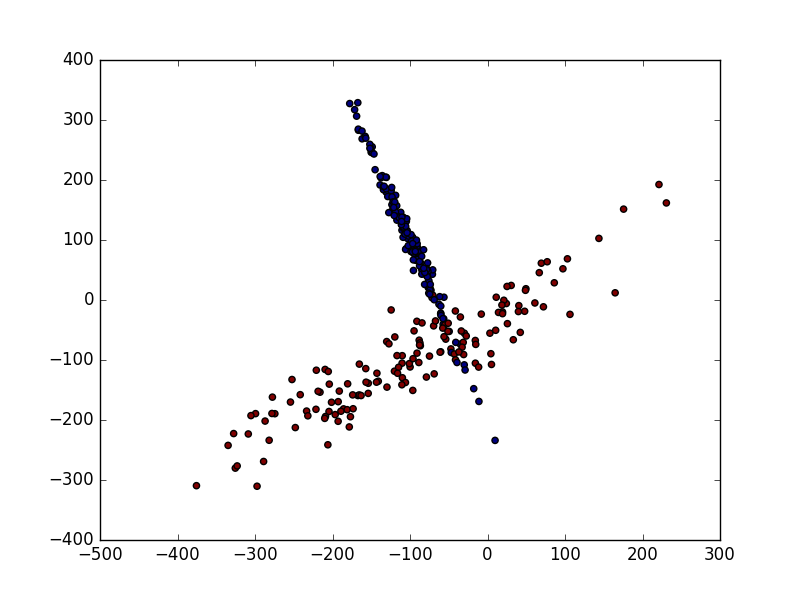
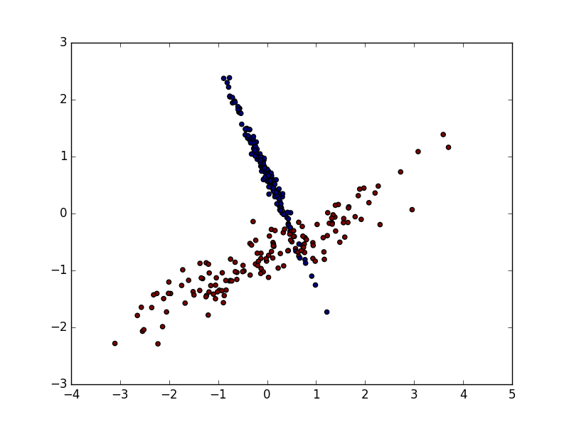

正规化 Normalization
作者: Bhan 编辑: 莫烦 2016-11-03
学习资料:
由于资料的偏差与跨度会影响机器学习的成效，因此正规化(标准化)数据可以提升机器学习的成效。首先由例子来讲解:
数据标准化
from sklearn import preprocessing #标准化数据模块
import numpy as np
#建立Array
a = np.array([[10, 2.7, 3.6],
[-100, 5, -2],
[120, 20, 40]], dtype=np.float64)
#将normalized后的a打印出
print(preprocessing.scale(a))
# [[ 0. -0.85170713 -0.55138018]
# [-1.22474487 -0.55187146 -0.852133 ]
# [ 1.22474487 1.40357859 1.40351318]]
数据标准化对机器学习成效的影响
加载模块
# 标准化数据模块
from sklearn import preprocessing
import numpy as np
# 将资料分割成train与test的模块
from sklearn.model_selection import train_test_split
# 生成适合做classification资料的模块
from sklearn.datasets.samples_generator import make_classification
# Support Vector Machine中的Support Vector Classifier
from sklearn.svm import SVC
# 可视化数据的模块
import matplotlib.pyplot as plt
生成适合做Classification数据
#生成具有2种属性的300笔数据
X, y = make_classification(
n_samples=300, n_features=2,
n_redundant=0, n_informative=2,
random_state=22, n_clusters_per_class=1,
scale=100)
#可视化数据
plt.scatter(X[:, 0], X[:, 1], c=y)
plt.show()

数据标准化前
标准化前的预测准确率只有0.477777777778
X_train, X_test, y_train, y_test = train_test_split(X, y, test_size=0.3)
clf = SVC()
clf.fit(X_train, y_train)
print(clf.score(X_test, y_test))
# 0.477777777778
数据标准化后
数据的单位发生了变化, X 数据也被压缩到差不多大小范围.

标准化后的预测准确率提升至0.9
X = preprocessing.scale(X)
X_train, X_test, y_train, y_test = train_test_split(X, y, test_size=0.3)
clf = SVC()
clf.fit(X_train, y_train)
print(clf.score(X_test, y_test))
# 0.9
如果你觉得这篇文章或视频对你的学习很有帮助, 请你也分享它, 让它能再次帮助到更多的需要学习的人. 莫烦没有正式的经济来源, 如果你也想支持 莫烦Python 并看到更好的教学内容, 赞助他一点点, 作为鼓励他继续开源的动力.